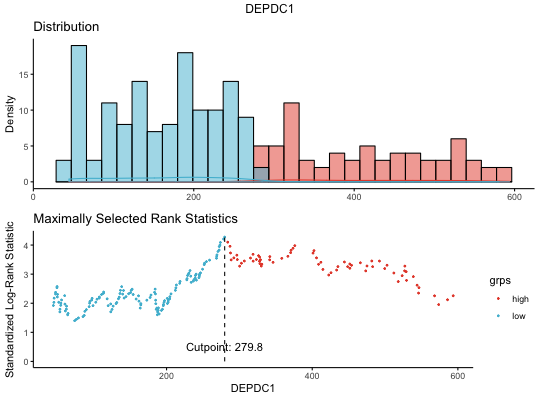
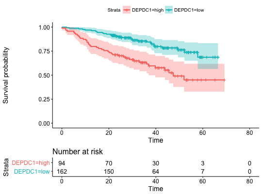

Determine the optimal cutpoint for one or multiple continuous variables at once, using the maximally selected rank statistics from the 'maxstat' R package. This is an outcome-oriented methods providing a value of a cutpoint that correspond to the most significant relation with outcome (here, survival).
surv_cutpoint(): Determine the optimal cutpoint for each variable using 'maxstat'.
surv_categorize(): Divide each variable values based on the cutpoint returned by surv_cutpoint().
surv_cutpoint(data, time = "time", event = "event", variables, minprop = 0.1, progressbar = TRUE) surv_categorize(x, variables = NULL, labels = c("low", "high")) # S3 method for surv_cutpoint summary(object, ...) # S3 method for surv_cutpoint print(x, ...) # S3 method for surv_cutpoint plot(x, variables = NULL, ggtheme = theme_classic(), bins = 30, ...) # S3 method for plot_surv_cutpoint print(x, ..., newpage = TRUE)
grid.arrange.# 0. Load some data data(myeloma) head(myeloma)#> molecular_group chr1q21_status treatment event time CCND1 CRIM1 #> GSM50986 Cyclin D-1 3 copies TT2 0 69.24 9908.4 420.9 #> GSM50988 Cyclin D-2 2 copies TT2 0 66.43 16698.8 52.0 #> GSM50989 MMSET 2 copies TT2 0 66.50 294.5 617.9 #> GSM50990 MMSET 3 copies TT2 1 42.67 241.9 11.9 #> GSM50991 MAF <NA> TT2 0 65.00 472.6 38.8 #> GSM50992 Hyperdiploid 2 copies TT2 0 65.20 664.1 16.9 #> DEPDC1 IRF4 TP53 WHSC1 #> GSM50986 523.5 16156.5 10.0 261.9 #> GSM50988 21.1 16946.2 1056.9 363.8 #> GSM50989 192.9 8903.9 1762.8 10042.9 #> GSM50990 184.7 11894.7 946.8 4931.0 #> GSM50991 212.0 7563.1 361.4 165.0 #> GSM50992 341.6 16023.4 2096.3 569.2# 1. Determine the optimal cutpoint of variables res.cut <- surv_cutpoint(myeloma, time = "time", event = "event", variables = c("DEPDC1", "WHSC1", "CRIM1")) summary(res.cut)#> cutpoint statistic #> DEPDC1 279.8 4.275452 #> WHSC1 3205.6 3.361330 #> CRIM1 82.3 1.968317# 2. Plot cutpoint for DEPDC1 # palette = "npg" (nature publishing group), see ?ggpubr::ggpar plot(res.cut, "DEPDC1", palette = "npg")#> $DEPDC1#># 3. Categorize variables res.cat <- surv_categorize(res.cut) head(res.cat)#> time event DEPDC1 WHSC1 CRIM1 #> GSM50986 69.24 0 high low high #> GSM50988 66.43 0 low low low #> GSM50989 66.50 0 low high high #> GSM50990 42.67 1 low high low #> GSM50991 65.00 0 low low low #> GSM50992 65.20 0 high low low# 4. Fit survival curves and visualize library("survival") fit <- survfit(Surv(time, event) ~DEPDC1, data = res.cat) ggsurvplot(fit, data = res.cat, risk.table = TRUE, conf.int = TRUE)